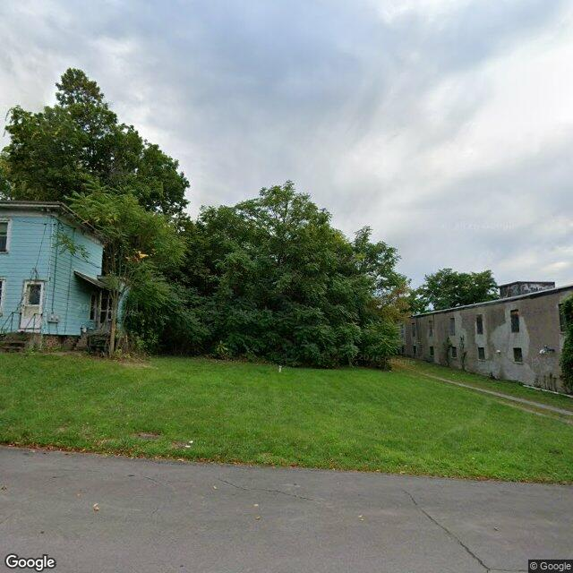

Property entry
209-11 Fourth North St
Published 2026-06-09T05:07:25+00:00
Parcel key: 003-03-080

overgrown yard · highAI image read
The image shows a two-story residential building with an open front door and a covered porch. The yard is overgrown with weeds and there are signs of disrepair on the exterior.
Property type guess: single_family
Visible conditions
- poor siding
- overgrown yard
- damaged or weathered roof
Condition scores
- Porch Or Entry
- poor
- Roof
- poor
- Siding Or Facade
- poor
- Trash Debris
- none_visible
- Vegetation Overgrowth
- major
- Windows Doors
- unclear
- Yard Or Lot
- poor
Visible flags
- Active Construction Visible
- no
- Boarded Windows Or Doors
- unclear
- Fire Damage Visible
- no
- Structural Damage Visible
- no
- Vacancy Signs Visible
- no
Possible image-only flags
- poor siding and exterior condition may not be fully visible due to angle or quality of the image, and additional conditions could exist on the interior or back of the property
AI review boxes
- overgrown yard: weeds in yard are overgrown and untended
Review reasons
- AI requested human review
- Possible image-only issue
Image quality
- Available
- True
- Bytes
- 70207
- Needs Rerun
- False
['image quality is poor with low resolution and may not fully represent property conditions']
ACS tract context
Census Tract 2; Onondaga County; New York
- Housing units
- 1686
- Median gross rent
- 146700
- Median household income
- 51848
- Poverty rate
- 28.1
- Renter-occupied share
- 50.1
- Total population
- 3511
- Vacancy rate
- 14.7
OpenStreetMap nearby
meter search radius
OpenStreetMap lookup failed: HTTP Error 504: Gateway Timeout
Vacant properties 1
- Latitude
- 43.07785897
- Longitude
- -76.15983945
- ObjectId
- 370
- Owner
- Carol Ace
- OwnerAddress
- 815 Wolf St Syracuse, NY 13208
- PropertyAddress
- 815 Wolf St
Rental registry 1
- Latitude
- 43.07791482
- Longitude
- -76.15978536
- NeedsRR
- Yes
- ObjectId
- 810
- PropertyAddress
- 817 Wolf St
- RR_app_received
- 1692748800000
Code violations 0
No matching records found in this feed.
Unfit properties 0
No matching records found in this feed.